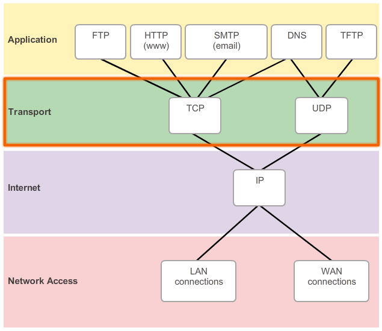

Reliable Transport Protocol WTP

Built a reliable transport protocol in C++ on top of UDP, providing reliable and in-order delivery of UDP packets in the presence of events like packet loss, delay, corruption, duplication, and reordering.
Tested and refined the protocol with Mininet on VMware using a simulated topology, achieving successful 10MB video transmission in a 250 Mbps bandwidth network with 80% loss rate, 75% reorder rate, and 600ms delay.
Optimized the protocol by improving the sliding-window algorithm with buffering to minimize re-transmissions, resulting in a 25% reduction in transmission time.